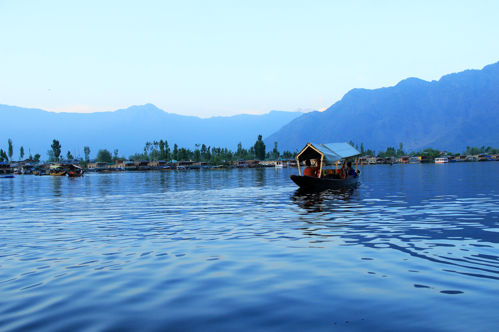
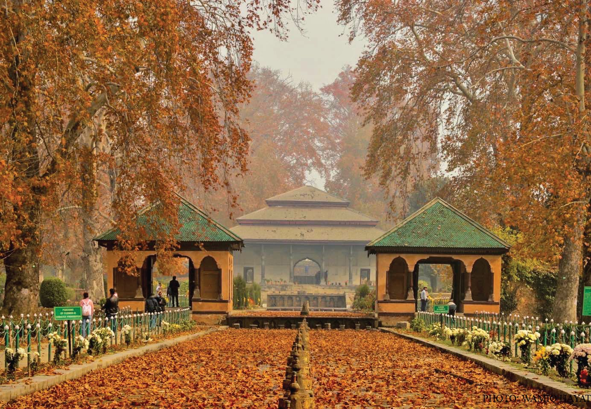
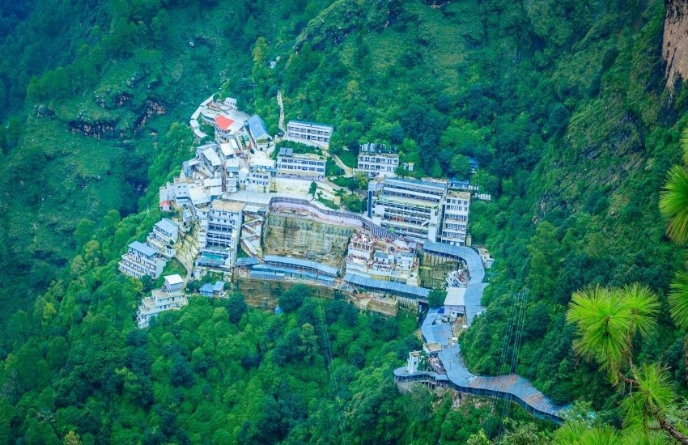
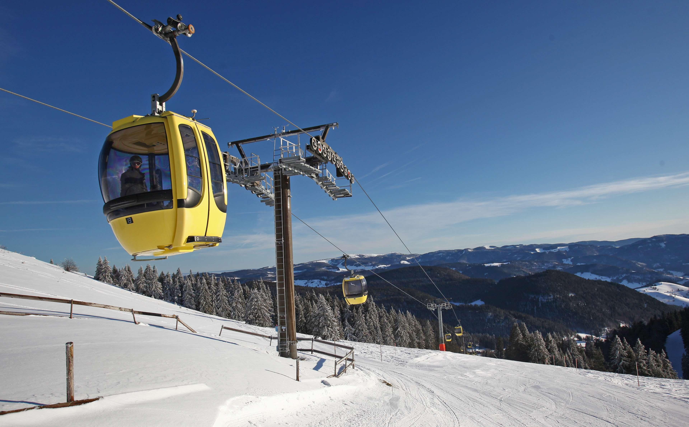
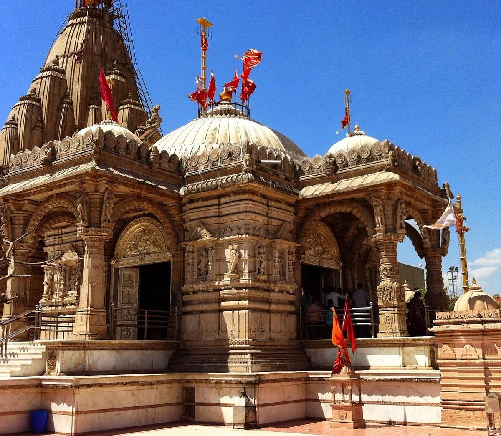

JAMMU & KASHMIR Tourist Places

DAL LAKE
Dal is a lake in Srinagar, the summer capital of Jammu and Kashmir, India.
It is an urban lake, the second largest lake in Jammu and Kashmir,
and the most visited place in Srinagar by tourists and locals.It is integral to tourism and
recreation in the Kashmir valley and is variously known as the "Lake of Flowers".

SHALIMAR BAGH
Shalimar Bagh is a Mughal garden in Srinagar, Jammu and Kashmir, India,
linked through a channel
to the northeast of Dal Lake. It is also known as Shalimar Gardens, Farah Baksh, and Faiz Baksh.
The other famous shoreline
garden in the vicinity is Nishat Bagh, 'The Garden of Delight'.

VAISHNO DEVI
Vaishno Devi (also known as Mata Rani, Trikuta, Ambe and Vaishnavi) is a
manifestation of the Hindu mother goddess Durga or Adi Shakti or Uma. Vaishno Devi is worshipped
as a combined avatar of the goddesses Mahakali, Mahalakshmi, and Mahasaraswati. Additionally,
she is seen as the potency of Hari or Vishnu.

GULMARG GONDOLA
Gulmarg Gondola is famously the longest and highest gondola ride in Asia, and
the second
longest and highest in the world. Situated in the Gulmarg Region of Jammu and Kashmir in India,
the town is a popular skiing area, but it's the gondola that draws thousands of tourists a year.
There are two phases to the gondola ride.

SHANKARACHARYA TEMPLE
The Shankaracharya Temple or Jyeshteshwara Temple is a Hindu temple situated
on top of the Shankaracharya Hill on the Zabarwan Range in Srinagar, Jammu and Kashmir, India.
It is dedicated to Shiva. The temple is at a height of 1,000 feet (300 m) above the valley floor
and overlooks the city of Srinagar.
On festivals such as Herath, as Maha Shivaratri is known as in the region, the temple is visited
by Kashmiri Hindus.